Riviera
Café · Nansensgade
A recommended Copenhagen stop from The Dog Friendly Guide collection.
City Edition · Copenhagen
Our curated selection of beautiful dog-friendly places in Copenhagen.
Explore the Copenhagen map11 recommendations
Café · Nansensgade
A recommended Copenhagen stop from The Dog Friendly Guide collection.
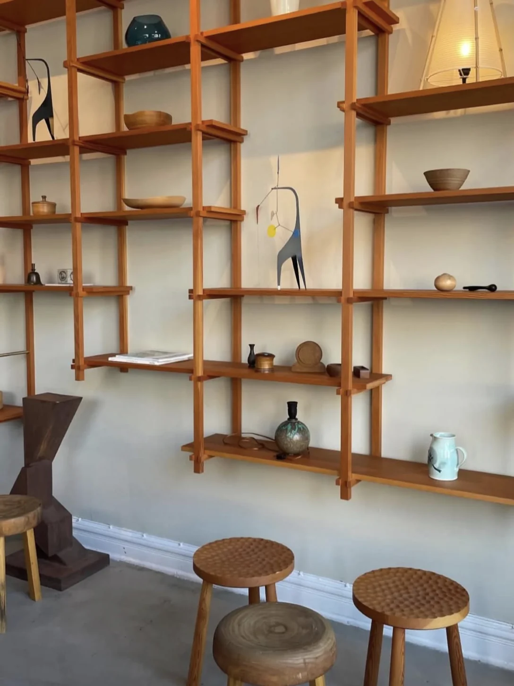
Café, art & vintage · Vesterbro
A Vesterbro coffee stop on Sønder Boulevard, with art and vintage design alongside the espresso. An easy pause on a walk through the neighbourhood.
Dogs are welcome inside.
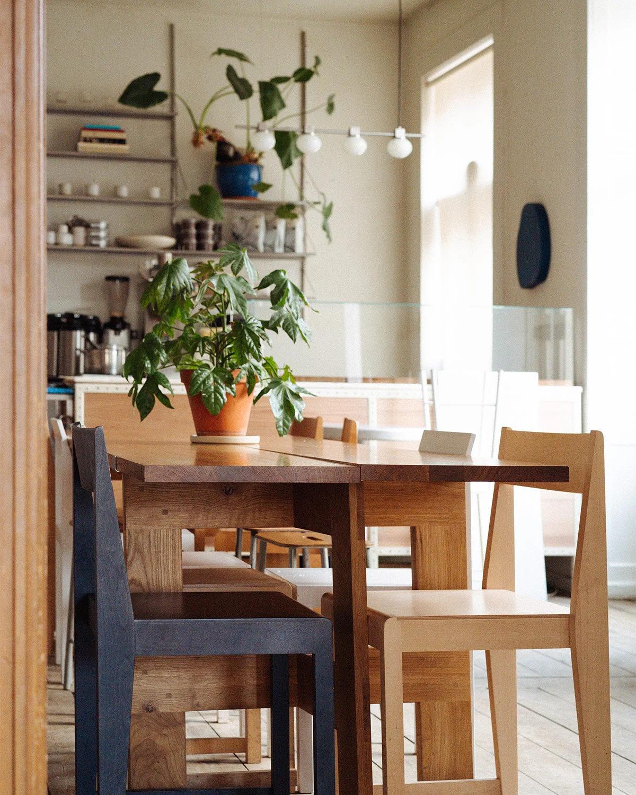
Café & bakery · Nyboder
In the former pharmacy that houses the FRAMA Studio Store, this Nyboder café pairs seasonal plates and pastries with warm timber and shelves of ceramics.
Dogs are welcome. Ask the café about seating if you plan to stay.
Photography: FRAMA
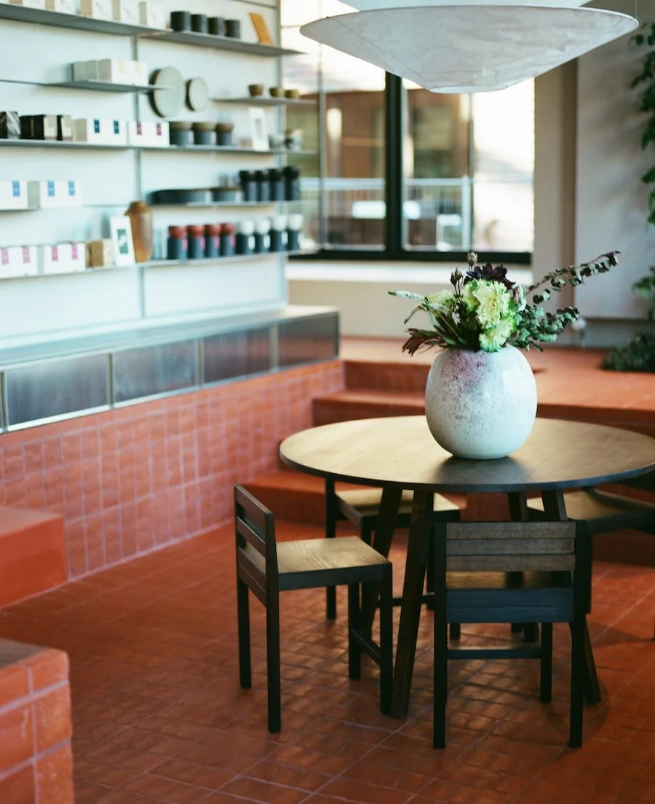
Specialty coffee & roastery · Nordhavn
La Cabra’s harbour-side roastery and café pairs carefully brewed coffee with a brick-lined room. Make it a stop on a walk through Nordhavn’s old port streets.
Dogs are welcome at this Nordhavn location. Ask the café about seating.
Photography: La Cabra
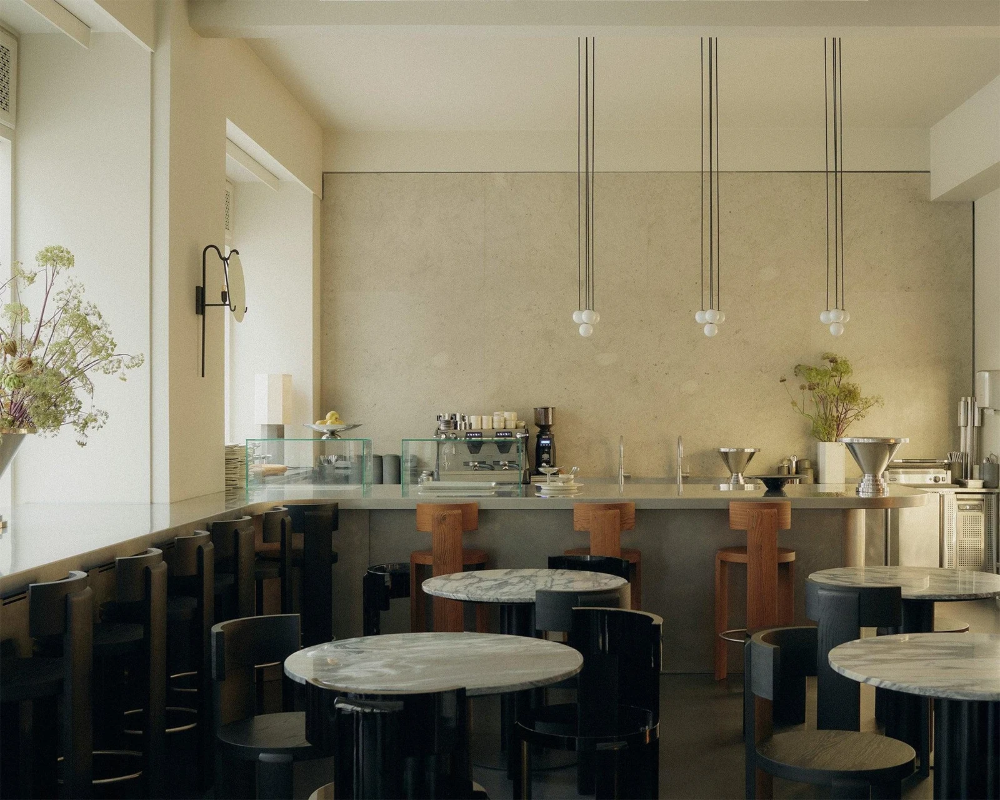
Gallery café & brunch · Indre By
The café inside Louise Roe Gallery pairs breakfast and seasonal lunch with coffee and pastries. Its sculptural tables and long counter make it an inviting pause in the city centre.
Dogs are welcome inside.
Photography: LOUISE ROE
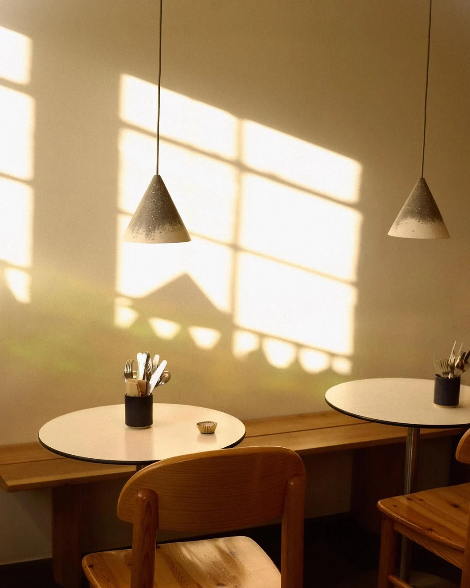
Bakery café & wine bar · Indre By
Tucked beneath the Gammel Strand art centre, this little café from the Flere Fugle team is a stop for baked goods, breakfast and a glass of wine later in the day.
Dogs are welcome at Lille Fugl. Ask the café about seating.
Photography: Flere Fugle
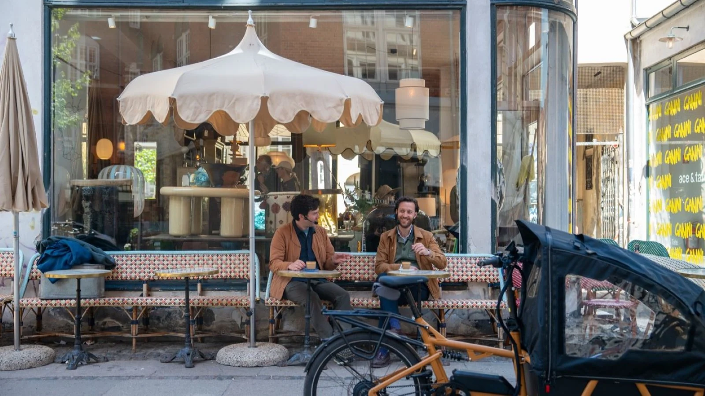
French café & wine bar · Indre By
Past the design shop on Ny Østergade, this French café and wine bar serves classics such as croque monsieur and omelettes. The little courtyard is a quiet place to pause in the city centre.
Dogs are welcome. Ask the café whether indoor seating is available.
Photography: VisitCopenhagen
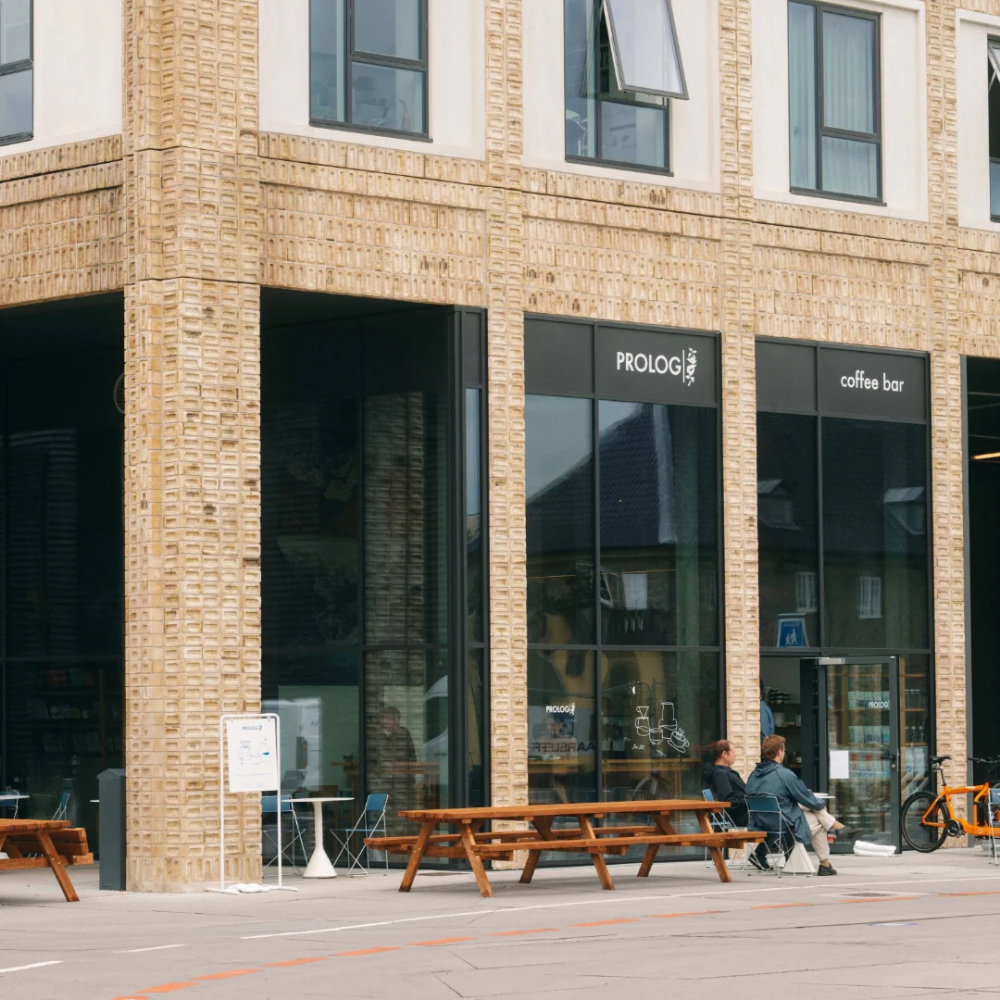
Specialty coffee bar · Christianshavn
Prolog’s Paper Island coffee bar sits on the harbour in Christianshavn. Stop for espresso or filter coffee from the Copenhagen roaster before a walk along the waterfront.
Dogs are welcome inside at Paper Island and at all Prolog coffee bars.
Photography: Prolog Coffee
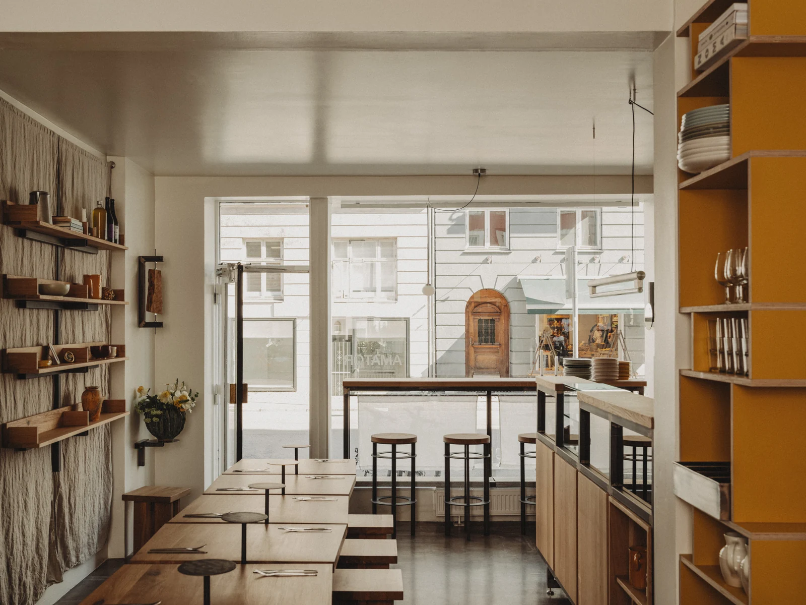
Breakfast & lunch restaurant · Østerbro
An intimate Østerbro restaurant where omelettes take centre stage. Long oak tables and a compact open kitchen give breakfast or lunch the feel of a meal at someone’s home.
Dogs are welcome. Ask the restaurant about seating.
Photography: Paolo Galgani
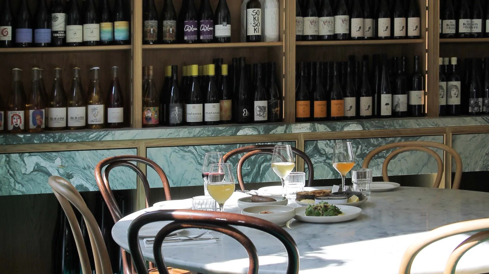
Restaurant & wine bar · Nyboder
A neighbourhood restaurant on Fredericiagade, equally suited to a slow breakfast or a seasonal dinner and a glass of wine. The menu shifts with what is in season.
Dogs are welcome. Ask the restaurant about seating.
Photography: Bottega Barlie
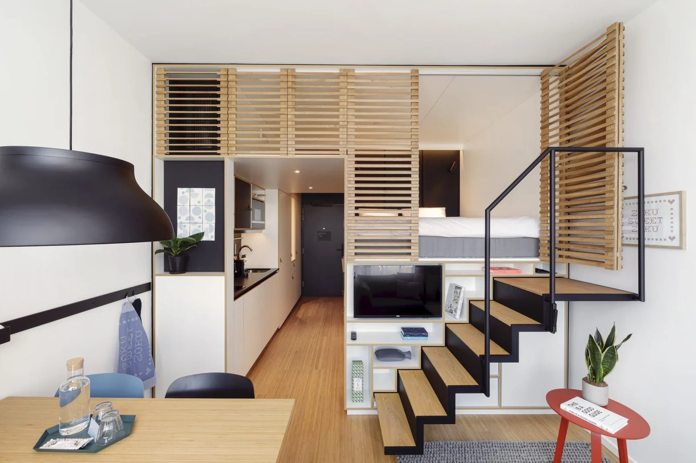
Apartment hotel · Amager
An Amager aparthotel with compact lofts, full kitchens and rooftop social spaces. A practical base for a longer stay or a weekend with your dog.
One dog up to 20 kg per loft. A cleaning fee applies. Dogs can join you in most social spaces, with the Living Kitchen restaurant excluded. Hotel pet policy
Photography: Zoku Copenhagen
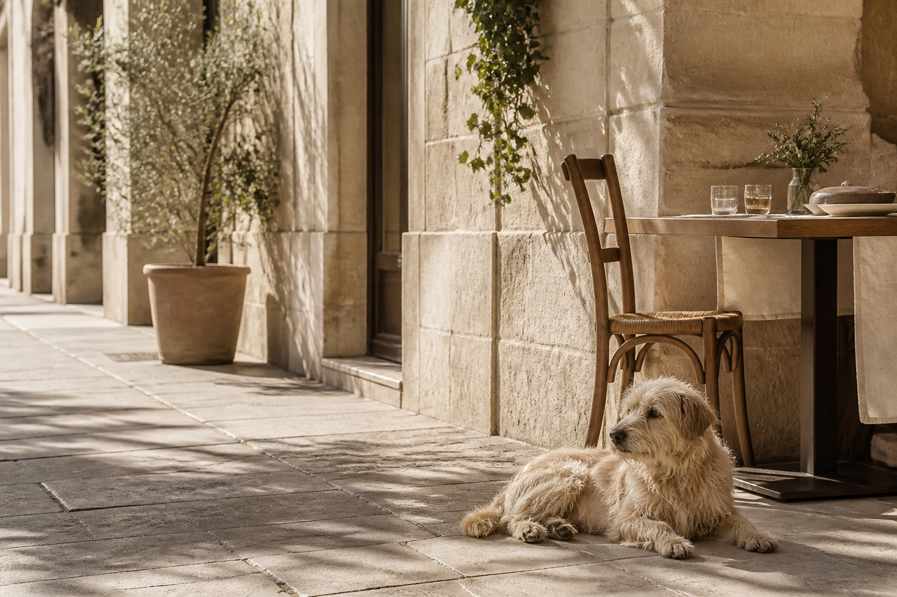
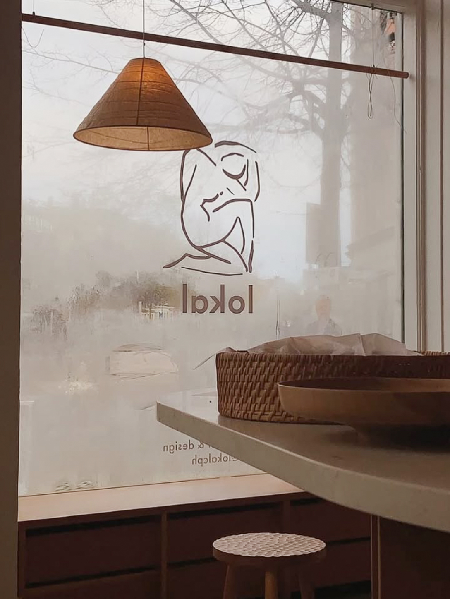
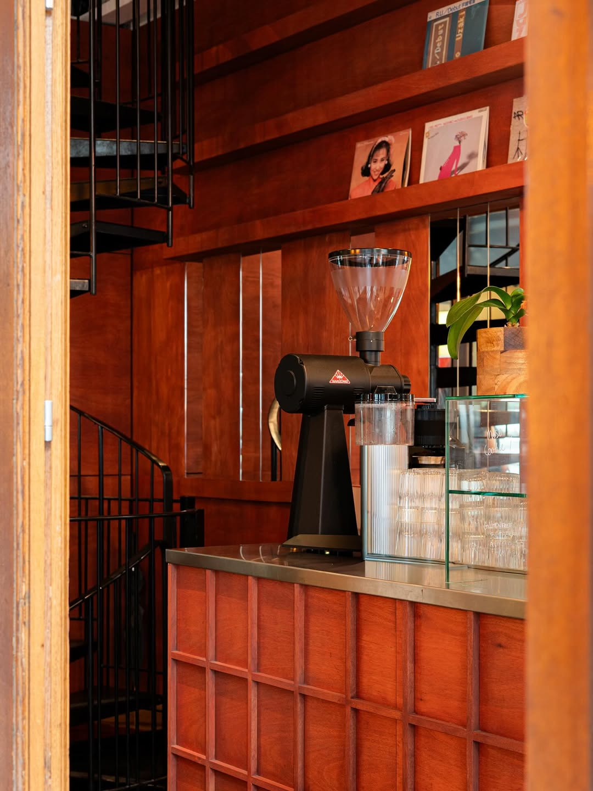
Coco’s next stop
Share the place’s name and Instagram. Coco and the Guide team will review it before it joins the Guide.